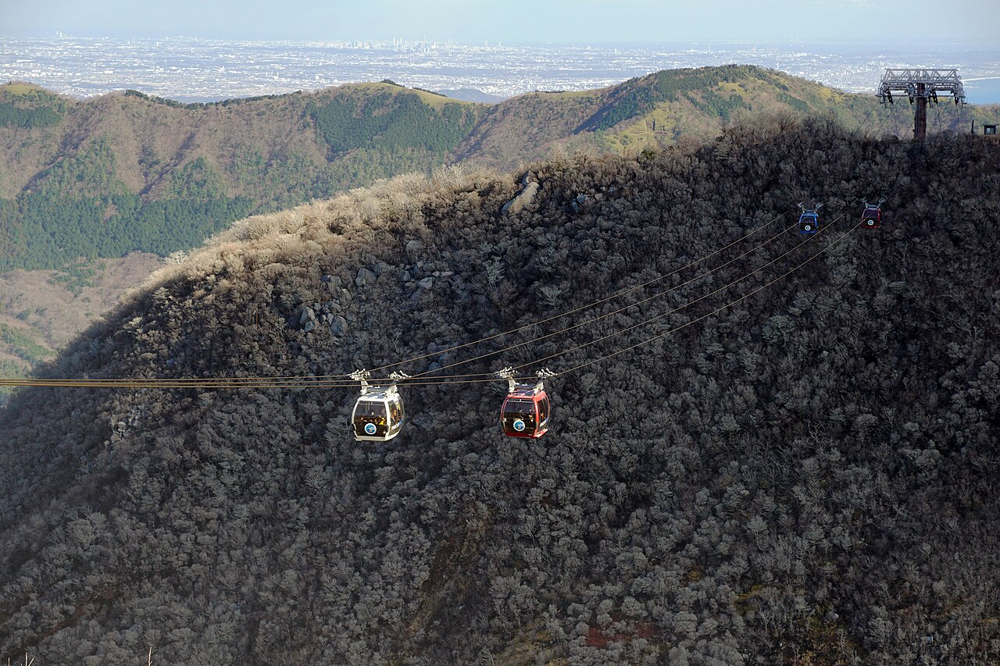
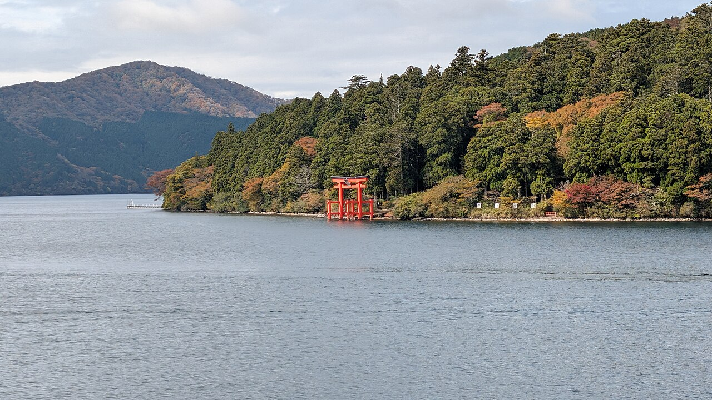
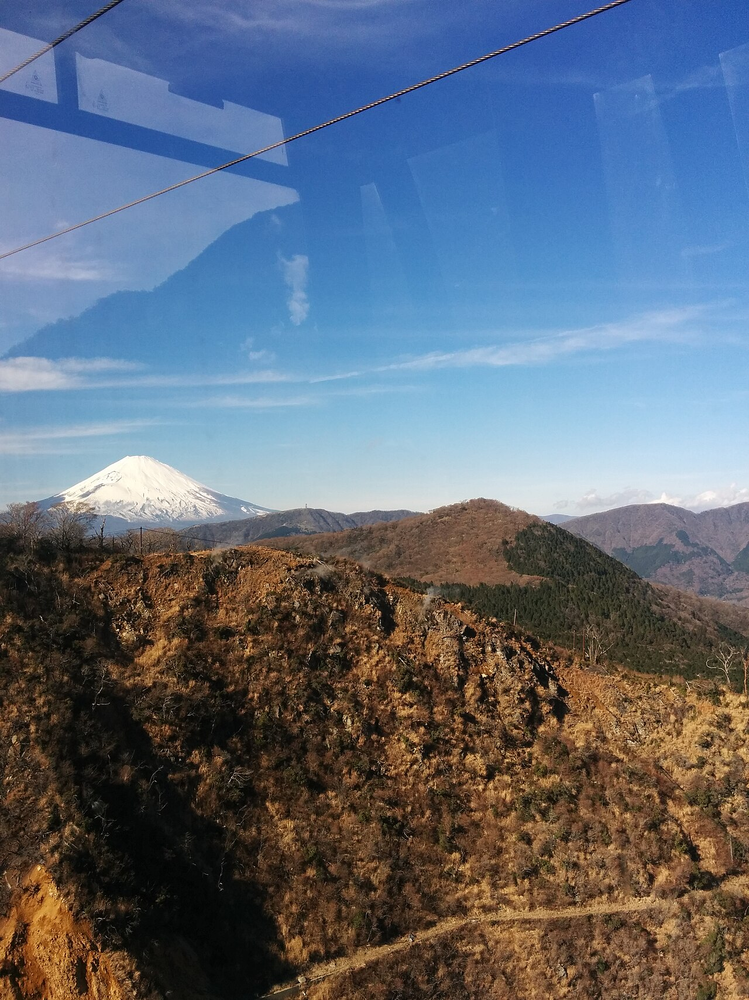

An onsen town in the mountains about 90 minutes from Shinjuku on the scenic Romancecar. The magic is the loop: a little railway, a cable car, a ropeway over steaming vents, and a boat across a lake under Mt. Fuji.



A tiny mountain train that switchbacks up through the forest and hydrangeas.
A steaming volcanic valley of sulfur vents. Try a black egg boiled in the hot springs.
A cable car gliding over the valley with Mt. Fuji ahead on a clear day.
A replica pirate ship across the lake, past the red torii standing in the water.
A hillside sculpture park with Picassos and Mt. Fuji as the backdrop.